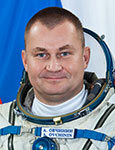

Lyndon B. Johnson Space Center
Houston, Texas 77058
|
National Aeronautics and Space Administration Lyndon B. Johnson Space Center Houston, Texas 77058 |
 |
Biographical Data |
||
Alexey Nikolaevich Ovchinin
Russian Test-Cosmonaut
PERSONAL DATA: Born September 28, 1971 in Rybinsk, Yaroslavl Region, Russia.
EDUCATION: Graduated from the Eisk Air Force Pilot School as pilot-engineer in 1992.
SPACEFLIGHT TRAINING: He was selected as a test-cosmonaut candidate of the Gagarin Cosmonaut Training Center Cosmonaut Office in October of 2006. Ovchinin finished basic space training in June 2009, and was qualified as test-cosmonaut.
EXPERIENCE: From August 1992 till February 1998 he served as an instructor-pilot at the Eisk Air Force Pilot School, and from February 1998 till September 2003 as an instructor–pilot and then as an air flight commander of the Krasnodar Aviation Institute.
From October 2003 served as an air flight commander of the 70th Test training air regiment named after V.S.Seryogin. He flew Yak-52 and L-39 aircraft. He logged over 1300 hours of flight time.
JANUARY 2014